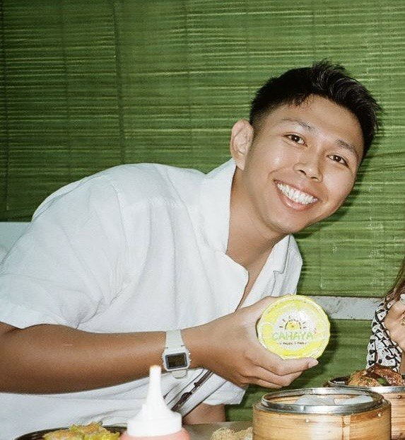

A few months ago I walked away from my role as co-founder of a marketing company. No safety net, no next job lined up — just a clear feeling that I wanted to build something more geared towards the future.
I spent time experimenting with every AI tool I could find — Claude, Gemini, Codex, Perplexity. Claude stood out for one reason: it could actually build things. So I went deeper. Learned how to use it properly, then discovered Claude Code — and that changed everything.
I studied Python and C++ at university, but I'll be honest, I wasn't good at either. The idea of having to write real code again was genuinely intimidating. Then I tried Claude Code and realised I didn't have to touch a single line. I just described what I wanted, and it built it. That was the moment this whole thing started.
I build one app per week — each one solving a real problem, each one shipped from scratch in seven days. The first was a Finance Tracker, because I'd just left my job and needed to know exactly where my money was going. After that, I just kept going. It turns out building things is addictive when you're not stuck on the code.
Every project on this site was built entirely with Claude as my co-builder — including the site itself. Some are live, some are in testing, some are just for me. But all of them started with a real problem worth solving.
If anything here catches your eye, vote for it. I use the votes to decide what gets built out further. And yes — this site was made with Claude too.